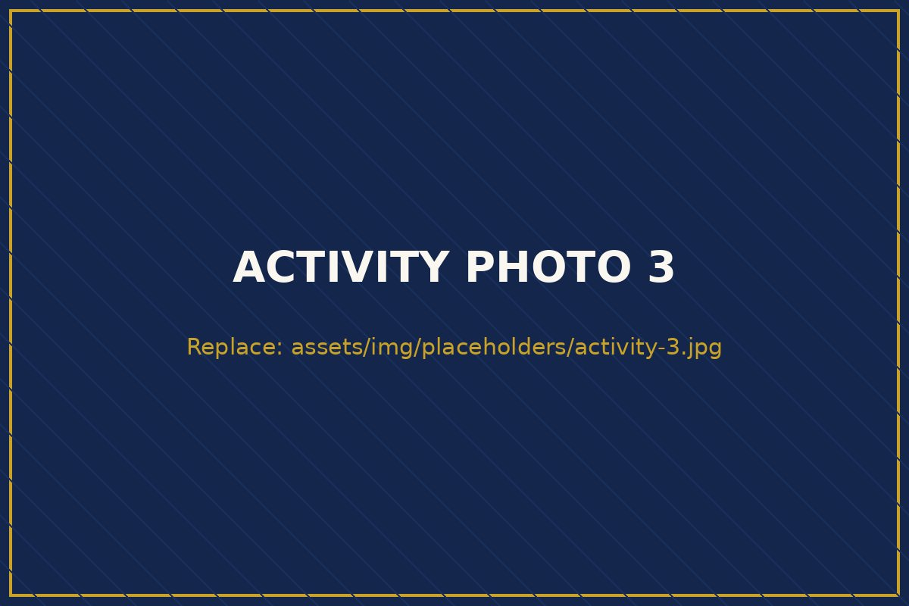
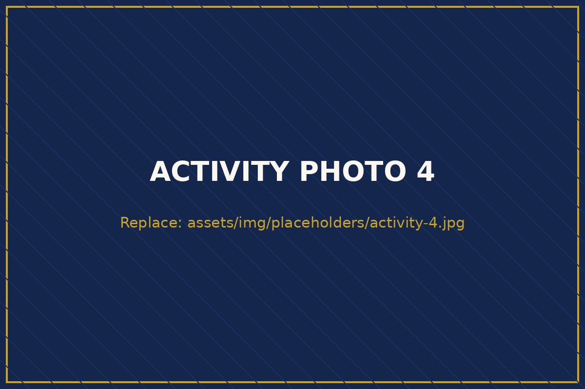
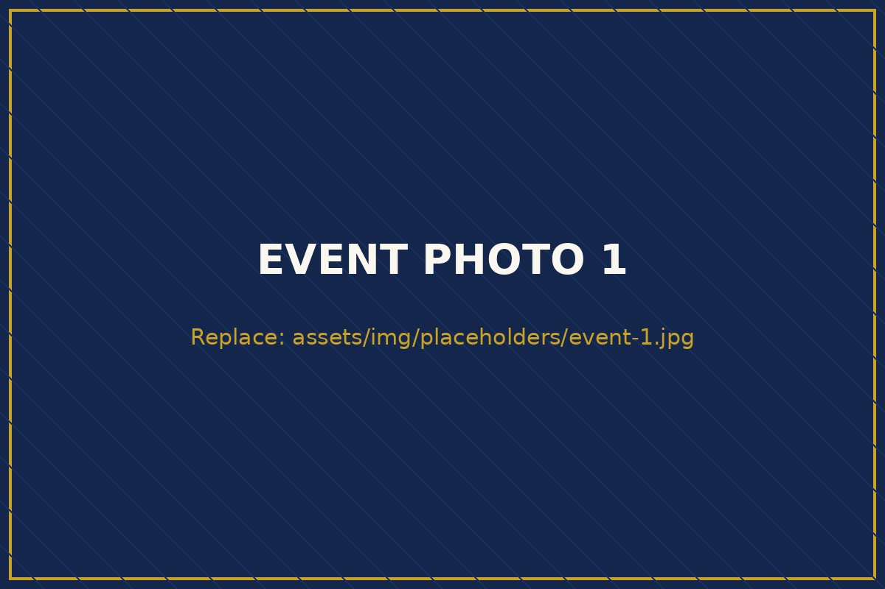
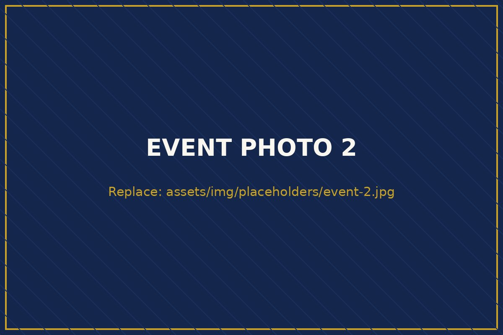
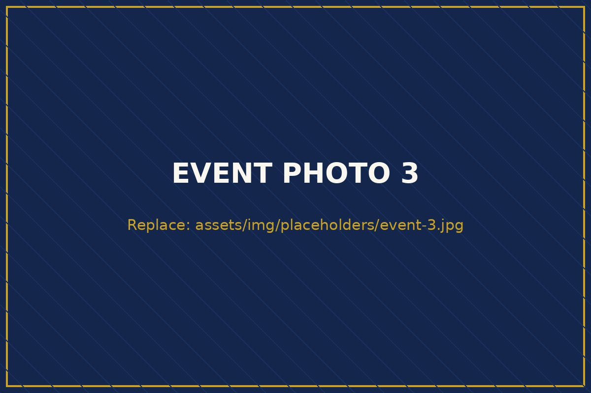

Core Areas of Focus
AIRA Africa operates across multiple research domains to promote interdisciplinary research advancement and innovation — including, but not limited to, the five areas below.

Advancing clinical and public health research that responds to Africa's most pressing health challenges — from the laboratory to the community.

Positioning agriculture as a serious research domain — critical for food security, climate resilience, and rural prosperity across the continent.

Equipping African researchers with the digital tools and analytical skills that define modern, globally competitive research.

Supporting applied science and engineering research that translates into sustainable development and societal advancement in Africa.
Working in one of these domains? Propose a collaboration or join a research program.

Social Sciences, Education & Policy Research
Generating the evidence that shapes better schools, stronger institutions, and wiser public policy.